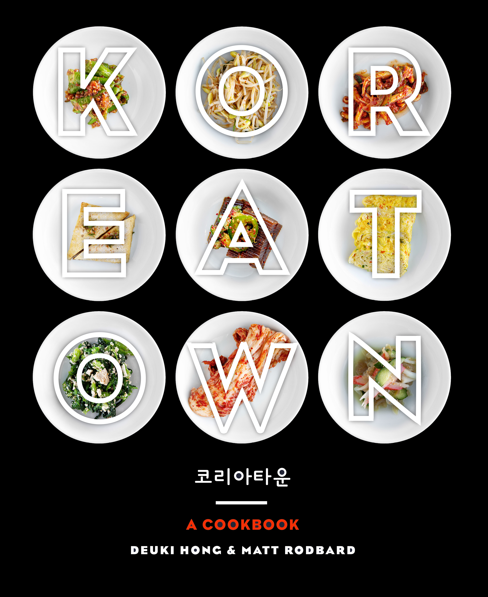

Food with Friends
Clarkson potter / spring 2016 / Design and Art Direction
The best gatherings are simple, yet somehow special. They might begin with an impromptu picnic after shopping at the farmer’s market or a late lunch with neighbors that stretches into cocktails under the stars.


Styled
Clarkson potter / spring 2016 / Design and Art Direction
The ultimate guide to thinking like a stylist, with 1,000 design ideas for creating the most beautiful, personal, andlivable rooms. The design is clean and reflective of the authores aesthetic.



Koreatown
Clarkson potter / spring 2016 / Design and Art Direction
This is not your average soft-focus “journey to Asia” kind of cookbook. Koreatown is a spicy, funky, flavor-packedlove affair with the grit and charm of Korean cooking in America.

Naturally Nourished
Clarkson potter / spring 2017 / Design and Art Direction
Sarah Britton streamlines vegetarian cooking by bringing her signature bright photography and fantastic flavors to an accessible cookbook fit for any budget, any day of the week.
Home Sewn
Clarkson potter / spring 2017 / Design and Art Direction
This beautiful craft book features distinctive sewing projects dedicated to living, resting, eating, and sharing.
here you will find the projects i am working on and feel free to take a peek